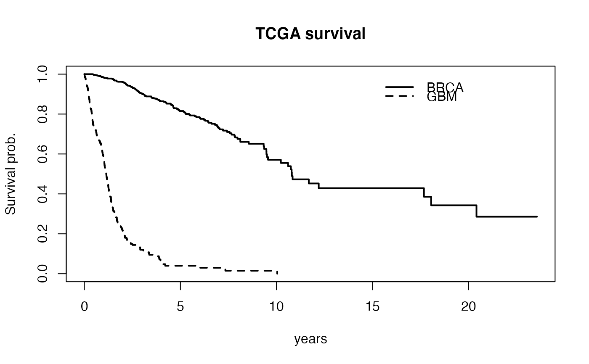

compare multiple tumor times with respect to survival
Usage
compare_tumors(types = c("BRCA", "GBM"), ...)Examples
cmp = compare_tumors()
#> Querying and downloading: BRCA_Mutation-20160128
#> see ?curatedTCGAData and browseVignettes('curatedTCGAData') for documentation
#> loading from cache
#> Querying and downloading: BRCA_colData-20160128
#> see ?curatedTCGAData and browseVignettes('curatedTCGAData') for documentation
#> loading from cache
#> Querying and downloading: BRCA_metadata-20160128
#> see ?curatedTCGAData and browseVignettes('curatedTCGAData') for documentation
#> loading from cache
#> Querying and downloading: BRCA_sampleMap-20160128
#> see ?curatedTCGAData and browseVignettes('curatedTCGAData') for documentation
#> loading from cache
#> harmonizing input:
#> removing 14592 sampleMap rows not in names(experiments)
#> removing 121 colData rownames not in sampleMap 'primary'
#> Querying and downloading: GBM_Mutation-20160128
#> see ?curatedTCGAData and browseVignettes('curatedTCGAData') for documentation
#> loading from cache
#> Querying and downloading: GBM_colData-20160128
#> see ?curatedTCGAData and browseVignettes('curatedTCGAData') for documentation
#> loading from cache
#> Querying and downloading: GBM_metadata-20160128
#> see ?curatedTCGAData and browseVignettes('curatedTCGAData') for documentation
#> loading from cache
#> Querying and downloading: GBM_sampleMap-20160128
#> see ?curatedTCGAData and browseVignettes('curatedTCGAData') for documentation
#> loading from cache
#> harmonizing input:
#> removing 7756 sampleMap rows not in names(experiments)
#> removing 309 colData rownames not in sampleMap 'primary'
plot(survival::survfit(cmp$survlist[[1]]~1), conf.int=FALSE, xlab="years", ylab="Survival prob.", main="TCGA survival", lwd=2)
lines(survival::survfit(cmp$survlist[[2]]~1), lwd=2, lty=2, conf.int=FALSE)
legend(15, .98, lty=c(1,2), lwd=2, legend=c("BRCA", "GBM"), bty="n")
